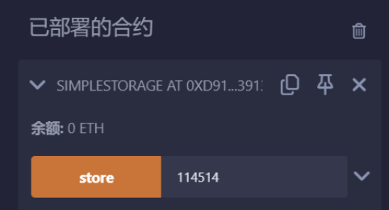
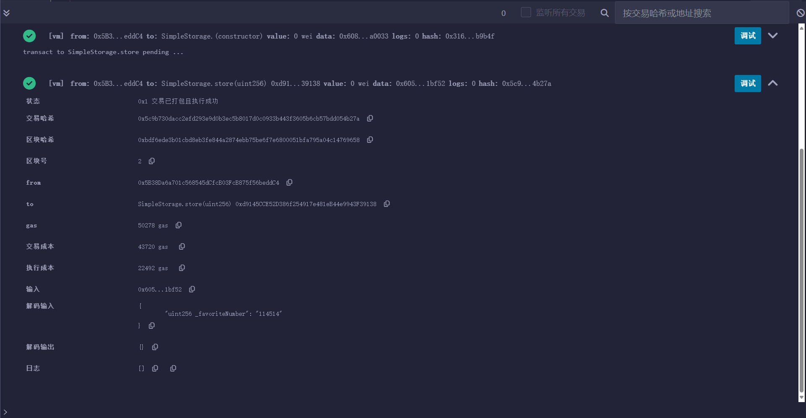
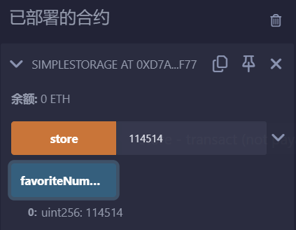

Chainlink公开课笔记1
Solidity基础01
Solidity官方文档
深入理解Solidity — Solidity develop 文档 (solidity-cn.readthedocs.io)
solidity版本
1 | |
solidity基础数据类型
基础的数据类型：bool，uint，int，address
bool ：可能的取值为字面常数值 true 和 false 。
int / uint ：分别表示有符号和无符号的不同位数的整型变量。 支持关键字 uint8 到 uint256 （无符号，从 8 位到 256 位）以及 int8 到 int256，以 8 位为步长递增。 uint 和 int 分别是 uint256 和 int256 的别名。
address：地址类型存储一个 20 字节的值（以太坊地址的大小）。 地址类型也有成员变量，并作为所有合约的基础。
bytes:变长字节数组。
string:变长 UTF-8 编码字符串类型。也是一种bytes，但是只能存储文本。
solidity函数
每个合约都有一个地址，就像每个账户都有地址一样。在部署后可以在终端看见部署细节，比如状态，交易哈希等等。部署一个合约相当于就是发送一个交易，在区块链做任何事，修改任何状态，就是在发一个交易。部署了一个合约就修改了区块链，让链上拥有这个合约。
1 | |
在部署合约区中，往框里输入114514，然后点击store，可以看到发了另一笔交易，在_favoriteNumber中存储了114514。但是无法知道favoriteNumber是否产生相应改变，因为favoriteNumber没有加修饰符public，加上后可以在部署合约区查看。
在函数中增加操作，使函数更加复杂，这个函数消耗的计算量更多，执行交易消耗的gas也会更多。
定义solidity函数的语法：
1 | |
function：这是声明一个新函数所必需的关键字。functionName：这就是你给你的函数起名字。type param1, type param2,...： 这些就是输入参数和它们对应类型。如果没有参数，那么括号内为空。public/external/internal/private: 这些关键词定义了访问控制类型，决定了哪些其他合约或者账户可以调用该函数。- public: 任何人都能调用此类方法
- external: 只有外部账户和其他合约才能调用此类方法
- internal: 只有当前智能合同或者从当前智能合同继承来得到新创建得到智能合同才可访问此类方法
- private: 只有当前智能协议内部可访问此类方法
returns (type returnVar1,...): 如果一个函数需要返回结果，那么需要使用returns关键字，后面跟着返回值的类型和变量名。
View 函数
可以将函数声明为 view 类型，这种情况下要保证不修改状态。
下面的语句被认为是修改状态：
- 修改状态变量。
- 产生事件。
- 创建其它合约。
- 使用
selfdestruct。 - 通过调用发送以太币。
- 调用任何没有标记为
view或者pure的函数。 - 使用低级调用。
- 使用包含特定操作码的内联汇编。
注解
constant是view的别名Getter 方法被标记为
view。
警告：编译器没有强制 view 方法不能修改状态。
Pure 函数
函数可以声明为 pure ，在这种情况下，承诺不读取或修改状态。
除了上面解释的状态修改语句列表之外，以下被认为是从状态中读取：
- 读取状态变量。
- 访问
this.balance或者<address>.balance。 - 访问
block，tx，msg中任意成员 （除msg.sig和msg.data之外）。 - 调用任何未标记为
pure的函数。 - 使用包含某些操作码的内联汇编。
警告：编译器没有强制 pure 方法不能读取状态。
可见性标识符
函数和状态变量有四种可见性类型。 函数可以指定为 external ，public ，internal 或者 private，默认情况下函数类型为 public。 对于状态变量，不能设置为 external ，默认是 internal 。
external ：
外部函数作为合约接口的一部分，意味着我们可以从其他合约和交易中调用。 一个外部函数 f 不能从内部调用（即 f 不起作用，但 this.f() 可以）。 当收到大量数据的时候，外部函数有时候会更有效率。
public ：
public 函数是合约接口的一部分，可以在内部或通过消息调用。对于公共状态变量， 会自动生成一个 getter 函数。
internal ：
这些函数和状态变量只能是内部访问（即从当前合约内部或从它派生的合约访问），不使用 this 调用。
private ：
private 函数和状态变量仅在当前定义它们的合约中使用，并且不能被派生合约使用。
注解
合约中的所有内容对外部观察者都是可见的。设置一些
private类型只能阻止其他合约访问和修改这些信息， 但是对于区块链外的整个世界它仍然是可见的。